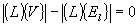

EXPRESS-G diagram
EXPRESS-G diagram| Polygonale Schleife - Topologie |
NOTE Definition according to ISO/CD 10303-42:1992
A poly loop is a loop with straight edges bounding a planar region in space. A poly loop is a loop of genus 1 where the loop is represented by an ordered coplanar collection of points forming the vertices of the loop. The loop is composed of straight line segments joining a point in the collection to the succeeding point in the collection. The closing segment is from the last to the first point in the collection. The direction of the loop is in the direction of the line segments.
A poly loop shall conform to the following topological constraints:The IfcPolyLoop is always closed and the last segment is from the last IfcCartesianPoint in the list of Polygon's to the first IfcCartesianPoint. Therefore the first point shall not be repeated at the end of the list, neither by referencing the same instance, nor by using an additional instance of IfcCartesianPoint having the coordinates as the first point.
- the loop has the genus of one.
- the following equation shall be satisfied

NOTE This entity exists primarily to facilitate the efficient communication of faceted B-rep models.
NOTE Entity adapted from poly_loop defined in ISO 10303-42.
HISTORY New entity in IFC1.0
Informal Propositions:
XSD Specification:
<xs:element name="IfcPolyLoop" type="ifc:IfcPolyLoop" substitutionGroup="ifc:IfcLoop" nillable="true"/>EXPRESS Specification:
| ENTITY IfcPolyLoop |
| SUBTYPE OF IfcLoop; |
|
| WHERE |
|
| END_ENTITY; |
Attribute Definitions:
| Polygon | : | List of points defining the loop. There are no repeated points in the list. |
Formal Propositions:
| AllPointsSameDim | : | The space dimensionality of all Points shall be the same. |
Inheritance Graph:
| ENTITY IfcPolyLoop |
| ENTITY IfcRepresentationItem |
| INVERSE |
|
| ENTITY IfcTopologicalRepresentationItem |
| ENTITY IfcLoop |
| ENTITY IfcPolyLoop |
|
| END_ENTITY; |
 Link to this page
Link to this page